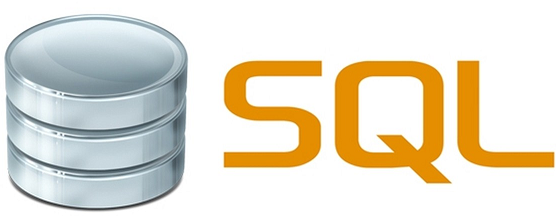
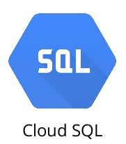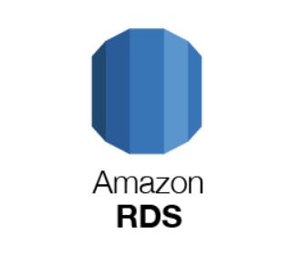
SQL (Structured Query Language) databases are commonly used to store information that is highly regular and strongly typed. In addition, such databases support transactional properties such as atomicity, consistency, isolation, and durability. Most cloud providers support managed SQL databases that obviate the need for the developer to manually install servers themselves. In this codelab, we will practice the basics of the SQL language and show how SQL databases can be quickly brought up in the cloud.
Visit the SQL quiz at https://www.w3schools.com/sql/sql_quiz.asp.
You do not have to be perfect, but check the ones you got incorrect.
Google Cloud Platform's Cloud SQL provides a drop-in replacement for a variety of SQL databases that one can run. In this section, we will create a managed MySQL database within Cloud SQL, set up its tables, and then query it using standard MySQL tools.
To begin with, bring up a session in Cloud Shell. Within Cloud Shell, download the database files and change into the lab directory
git clone https://github.com/GoogleCloudPlatform/training-data-analyst cd training-data-analyst/CPB100/lab3a
Examine the data definition language (DDL) commands in cloudsql/table_creation.sql that specify the schema and answer the following questions:
Examine the data that fills in these tables at cloudsql/accommodation.csv. Find the accommodations in Dublin within the file, then answer the following question.
We will now stage these files on a storage bucket so that the Cloud SQL service can use them when creating and initializing a server for us. From Cloud Shell, create a regional storage bucket in us-west1 with a unique name. Note that the letters used in the name must be all lowercase.
gsutil mb -c regional -l us-west1 gs://<BUCKET-NAME>
Then, copy the files from the cloudsql directory over to it.
gsutil cp cloudsql/* gs://<BUCKET-NAME>/sql/
In subsequent steps, we will be accessing our SQL database from Cloud Shell. To enable access, we must first find the external IP address of the Cloud Shell session. There are a variety of sites that will report back the IP address of a web request. To do so for your Cloud Shell session, run the following command and record your session's IP address.
curl http://ipecho.net/plain ; echoFinally, visit the Cloud Storage service from the web console to verify that your files have been copied over.
In the web console, scroll down and select the SQL service or go directly to the service at https://console.cloud.google.com/sql. Create an instance and choose the MySQL engine.
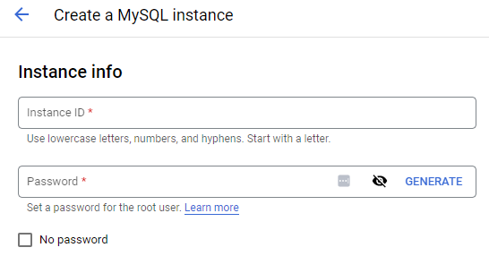
With the default settings, name the instance rentals, place it in us-west1-b, and set the root password for the database. (Remember the password). Then, in the data protection section of the configuration options, disable instance deletion protection as shown below.
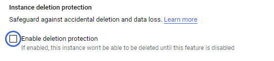
Create the instance and make a note of the external IP address of the MySQL instance that has been brought up.
After the instance has been created, click on the instance and edit it. Within "Connections" in the instance's networking settings, add an authorized network that will be allowed to connect to the instance.
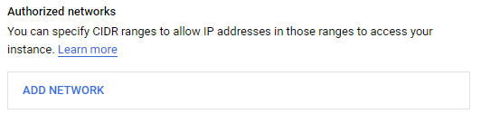
Add a network using the IP address of your Cloud Shell session given as a CIDR route (e.g. w.x.y.z/32). Click on "Done", then "Close".
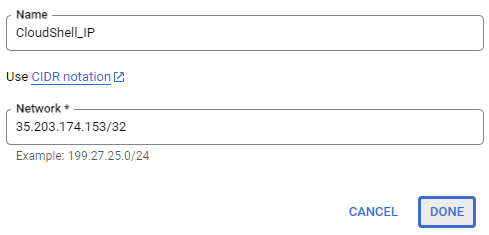
Then, scroll down and save the changes for the instance.
Alternatively, one can use the command-line interface to bring up the instance. Within Cloud Shell, bring up a MySQL instance using a pre-configured machine type, specifying the Cloud Shell IP address in the authorized networks settings to allow access from it.
gcloud sql instances create rentals \
--database-version MYSQL_8_0 \
--tier=db-g1-small \
--region=us-west1 \
--authorized-networks <CloudShell_IP>After the instance has been brought up, its IP address is returned. Set the instance's root password by setting it in the command below.
gcloud sql users set-password root \
--host=% \
--instance rentals \
--password <Password>Within Cloud SQL, click on the instance, then on "Import" on the top menu bar. Click on the "Browse" button and browse to the storage bucket you created initially for this lab. Locate the lab's SQL files and select table_creation.sql. Import the file to create the schema.
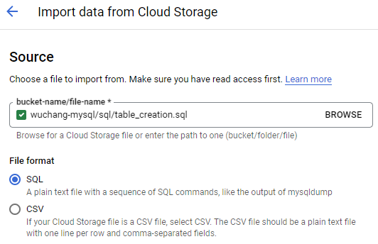
After the schema has been loaded and the database has updated, go back to the instance and import the two CSV files containing the table data from your storage bucket. First, import accommodation.csv into the database that was created in the previous step (recommendation_spark) and into the table Accommodation. Ensure that CSV is specified and that the name of the database and table exactly match those in table_creation.sql.
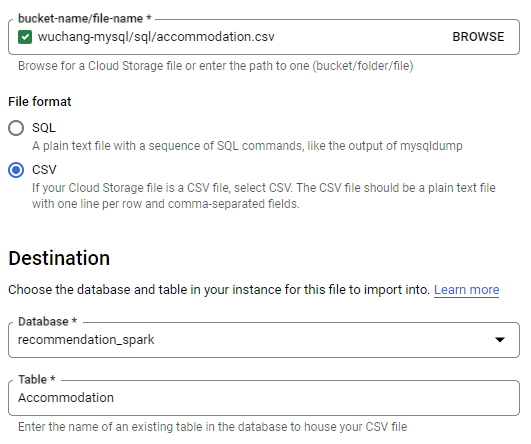
Repeat the import for rating.csv using the table Rating.
Within your Cloud Shell session, connect to the Cloud SQL instance using its IP address and the root password you set previously.
mysql --host=<MySQLIP> --user=root --passwordWithin the MySQL client shell, set the database for the session.
use recommendation_spark; View the tables that have been created.
show tables;Verify the data has been imported properly.
select * from Rating;Run queries for accommodations at two price ranges of your choice and two types of your choice.
select * from Accommodation where...In Cloud Storage, delete the storage bucket created. Then, visit Cloud SQL in the web console and delete the instance created. Leaving the instance up and running will quickly drain your credits as seen below.
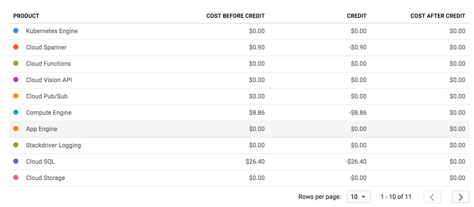
Remove the storage bucket created via
gsutil rm -r gs://<BUCKET-NAME>
Then, delete the instance.
gcloud sql instances delete rentals
As with Cloud SQL, Amazon Web Service's Relational Database Service provides a drop-in replacement for a variety of SQL databases that one can run. To begin with, bring up the AWS Console.
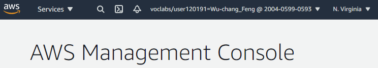
Before we set up our RDS instance, we will first configure a security group to ensure access is only allowed from a particular network address. There are several options for connecting to your instance using a MySQL command-line client including from a Cloud9 instance or from linux.cs.pdx.edu. For this lab, we will use AWS Cloud Shell. Click on the Cloud Shell icon from the AWS console.
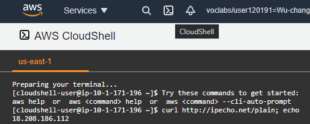
Then, perform the following command to obtain the IP address of the shell.
curl http://ipecho.net/plain ; echo
With the IP address, visit the AWS Console, search for "VPC", then click on it. From the VPC landing page, scroll to find "Security Groups", click on it, then click on "Create security group"
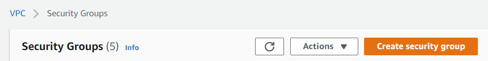
Configure the group to add a rule to allow in-bound traffic for MYSQL (Port 3306) for the IP address using its CIDR notation.
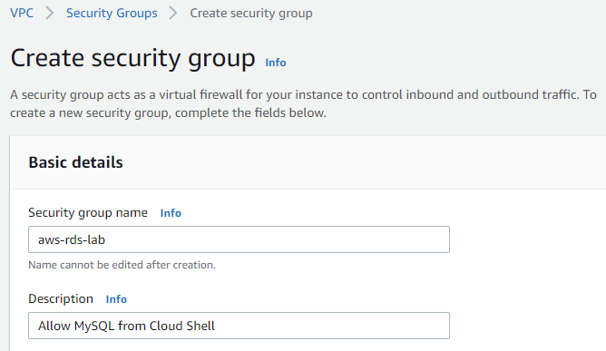
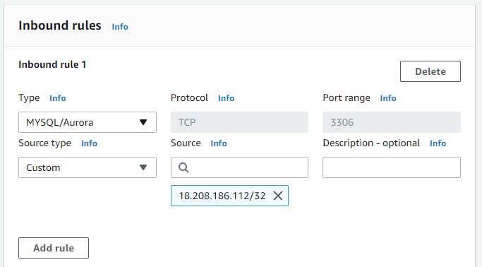
Create the security group.
We can perform the same operations using the AWS CLI installed in Cloud Shell. First, create the group on the default VPC.
aws ec2 create-security-group --group-name aws-rds-lab \
--description "Allow MySQL from Cloud Shell"In the output, make a note of the returned GroupId. Then, using the GroupId and the IP address of Cloud Shell found previously, add an ingress rule to the group to allow inbound MySQL connections.
aws ec2 authorize-security-group-ingress --group-id <GroupId> \
--protocol tcp --port 3306 --cidr <CloudShellAddress>/32Go to the AWS Console, search for RDS, and click on the RDS service. From the RDS landing page, click on "Create database". Choose Standard Create, MySQL and the RDS Free tier or Dev/Test template. Continue to the next step without creating the database.
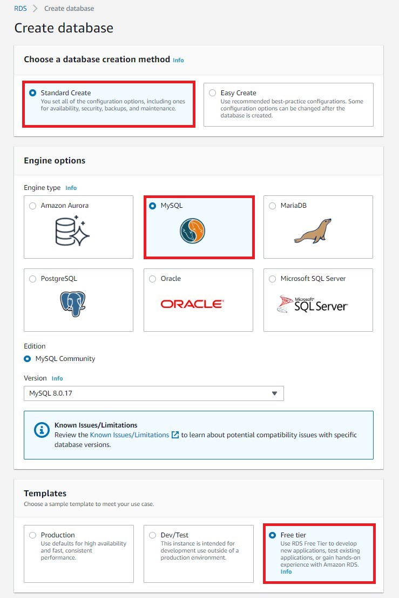
Name the database instance aws-rds-lab and configure a master username of admin and set a password.
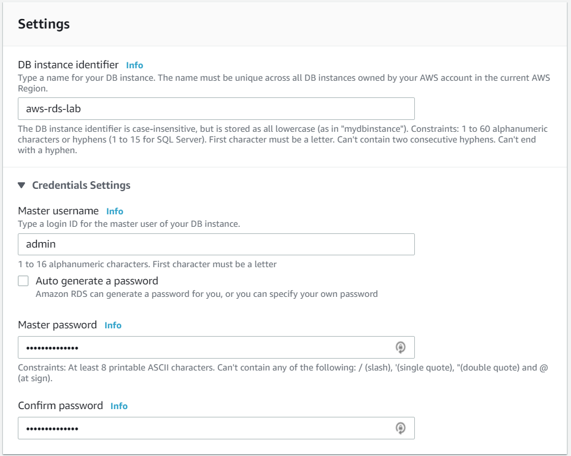
Keep the default settings for "DB instance size", "Storage", and "Availability & durability". Typically, one would put the RDS instance in a private network (VPC) and disallow access from external locations. For the purpose of this lab, however, we will enable public access. Under "Connectivity", use the default VPC, but expand "Additional connectivity configuration". Use the default subnet group setting and click on "Publicly accessible".
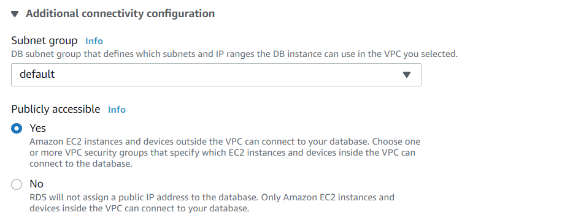
Then in the "Existing VPC security groups", select the dropdown and add the security group you created previously to the instance.
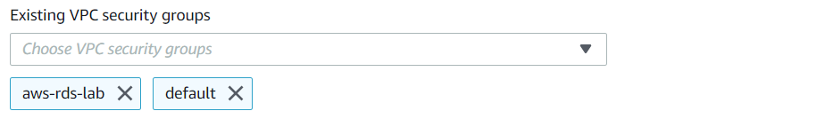
Finally, create the database.
Continue to the next step without creating the database.
Alternatively, the RDS instance can be created via the AWS CLI given the security group GroupId that was previously set up and choosing a Password for the admin account
aws rds create-db-instance --db-instance-identifier aws-rds-lab \
--db-instance-class db.t2.micro --allocated-storage 20 \
--engine mysql --vpc-security-group-ids <GroupId> \
--master-username admin --master-user-password <Password>Visit the web console of RDS and wait until the "Status" of the database is "Available". Make a note of the endpoint address on the bottom-left that will be used to connect to as shown below:
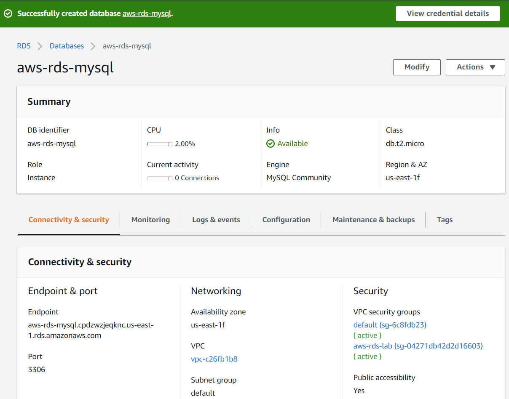
On the machine whose IP address you added to the security group, go back to Cloud Shell and connect up to the database using the MySQL client and the Endpoint hostname given for the instance. Enter the password set previously.
mysql -h <instance_endpoint> -P 3306 -u admin -p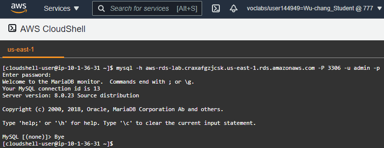
Go back to RDS in the AWS console. Select the database created and delete it. Do not save a snapshot. Then, visit the VPC console and delete the security group.
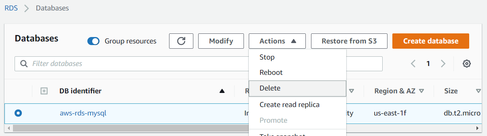
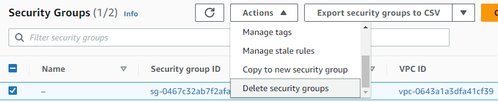
Delete the instance.
aws rds delete-db-instance --db-instance-identifier aws-rds-lab \
--skip-final-snapshot After the instance has been deleted, delete the security group.
aws ec2 delete-security-group --group-id <GroupId>